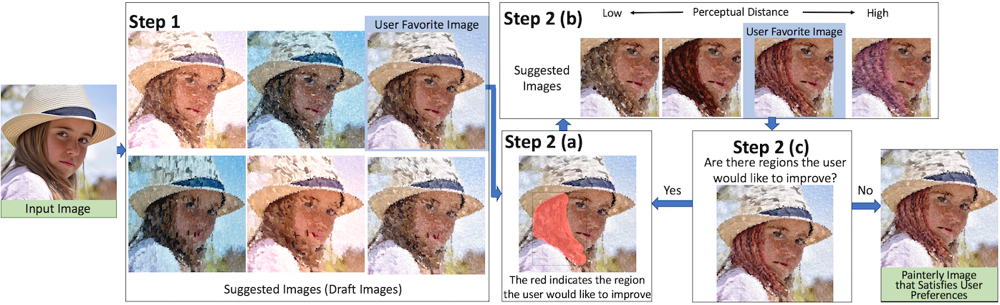

Creativity Enhancement of Painterly Rendering using a Suggestive Interface

Overview of the workflow of our system. In Step 1, the user selects, from many images that the system suggests, one draft for the initial painterly image (canvas).
Then, the user iterates (Step 2) to interactively improve the painterly image.
In Step 2(a), the user paints on the canvas over the regions that he would like to improve. In Step 2(b), the system suggests immediately several images to substitute for this region, organized by perceptual distance from the current content of the region.
The user selects his favorite image from the suggested set.
In Step 2(c), if the user finds more regions that he would want to improve on, he goes back to Step 2(a).
Otherwise, the painterly image is considered satisfying the user’s preference.
Abstract
Non-photorealistic rendering (NPR) can use various parameters and techniques to automatically generate a wide range of images with different painterly appearances. However, a real painting is the result of a creative process, and traditionally, many artists have developed their own media, styles, and techniques. Fortunately, the computer can also be used in different ways, for instance, as a tool to support and enhance creativity. We propose a system to interactively generate a painterly image through a suggestive interface. After the artist intuitively selects a region, our system immediately offers different suggestions of NPR modifications. The multidimensional NPR parameter space is transformed in a more perceptual space by optimization, which is validated by a user study. The suggested images generated from sampled parametric variations are displayed according to our perceptual distance. Through the same interface, our system allows for refinement or exploration without any need to understand the various parameters involved in generating NPR effects. The interest of our suggestive interface is supported by another user study, where participants felt that it stimulated their creativity as they interactively and iteratively created painterly images by choosing suggested images for the selected regions. Another experiment showed that different viewers found the resulting images more creative than their initial automatically generated images.
Video
Publication
Shuhei Kodama, Pierre Poulin, Tomoaki Moriya and Tokiichiro Takahashi: Creativity Enhancement of Painterly Rendering using a Suggestive Interface, Computers & Graphics, vol.71, pp.42-54, 2018. [publisher website]
[publisher website] (You can download for free until May 06, 2018.)